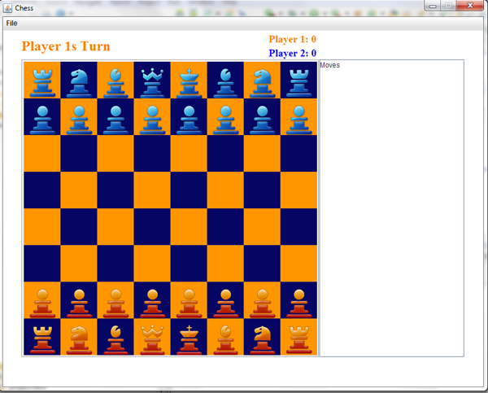
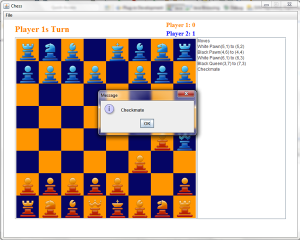

This is a classical version of chess played between two people either on the same computer, or through a network. It is written in java, allows all valid chess moves, detects check and checkmate, keeps a log of all moves made, and has networking capabilities.
The networking portion is done through a client server style. One person starts a game server and the other person must start their game as a client and connect to the server.
Project source